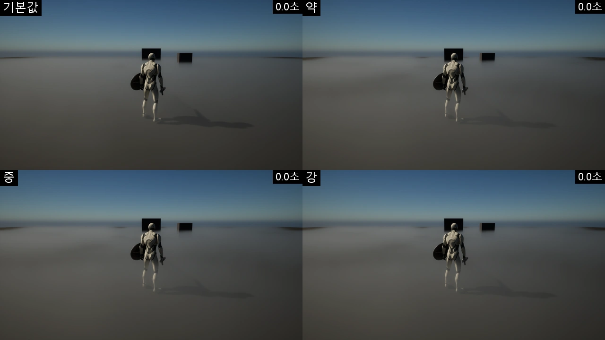
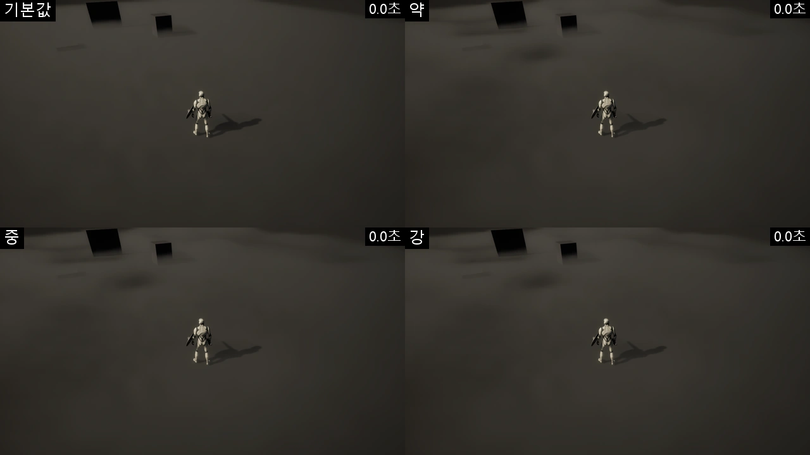
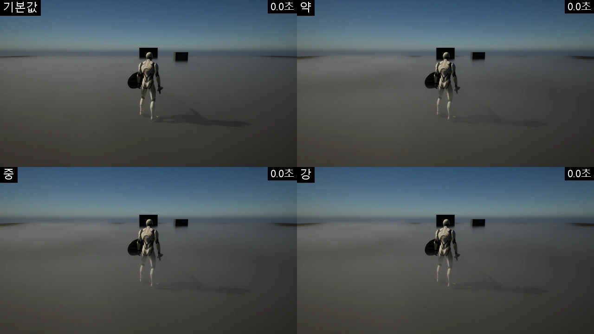
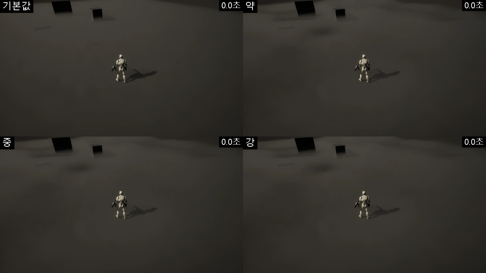

3D 안개 · 1c · 2026-11-14
어느 안개가 좋은지 눈으로 골라 주세요
같은 동작(6m 걷기, 제자리에서 칼 한 번 휘두르기)을 지금 기본값과 후보 셋으로 찍어 나란히 놓았습니다. 네 칸은 같은 시각에 맞춰 함께 움직입니다. 모양이 좋은지는 제가 정하지 않았습니다.
네 칸이 무엇인가
- 기본값지금 설정 그대로. 몸은 작은 구 넷(손, 두 발, 골반: 반지름 20~30cm)으로 안개를 밀고, 구름 무늬는 없습니다.
- 약몸은 바람을 내지 않고 지나간 자리의 안개만 걷어 냅니다(반지름 35~45cm). 4m 간격 구름 무늬를 넣고, 칼의 영향 반지름을 20 → 30cm 로 키웠습니다.
- 중몸의 영향 반지름을 45~60cm 로 키우고 몸이 내는 바람을 2배로 했습니다. 구름 무늬와 칼 반지름은 약과 같습니다.
- 강몸의 영향 반지름 60~75cm, 바람 2배, 그리고 바람이 더 오래 남습니다. 구름 무늬와 칼 반지름은 같습니다.
걷기
앞으로 6m 걸은 뒤 멈춰 섭니다. 걷기는 약 1.2초에 끝나고, 그 뒤는 서 있는 동안 자국이 어떻게 사라지는지입니다.

멈춘 그림으로 보기 (0.5 · 1.0 · 2.5 · 4.0 · 7.0초)


멈춘 그림으로 보기

칼 휘두르기
제자리에서 한 번 휘두릅니다(동작 1.85초). 칼끝은 바닥 위 27cm 까지 내려와 안개(높이 90cm)를 가릅니다.

멈춘 그림으로 보기 (0.6 · 1.2 · 2.5 · 4.0 · 6.0초)


멈춘 그림으로 보기

숫자로 보면
계산을 켠 화면과 끈 화면의 밝기 차입니다(0~255 가운데 얼마나 달라졌나, 뒤에서 본 화면). 같은 조건을 되풀이했을 때의 흔들림은 0.2~0.3 입니다.
| 후보 | 걷기 자국 멈춘 뒤 1.3초 | 걷기 자국 6.8초 뒤 | 휘두르기 자국 2.5초 | 휘두르기 자국 7초 |
|---|---|---|---|---|
| 기본값 | 1.3 | 0.6 | 4.6 | 1.8 |
| 약 | 3.8 | 0.7 | 12.8 | 4.6 |
| 중 | 10.6 | 2.4 | 12.7 | 4.9 |
| 강 | 17.0 | 6.7 | 19.1 | 14.6 |
제가 본 것 (참고)
- 기본값은 안개가 무늬 없는 매끈한 한 장으로 보입니다. 후보 셋은 구름 무늬 때문에 층이 조금 생깁니다.
- 걷기 자국은 기본값과 약에서 거의 안 보입니다. 중에서는 2~4초쯤 보였다가 사라지고, 강에서는 크고 오래 남습니다.
- 강은 비스듬히 위에서 보면 폰 둘레에 둥근 고리 모양의 어두운 자리가 생깁니다. 인공적으로 보일 수 있습니다.
- 걷기 자국이 걸어온 선의 양쪽에 고르게 생기지 않고 왼쪽으로 치우칩니다. 원인은 아직 확인하지 못했습니다.
- 반응이 소용돌이치는 안개라기보다, 어두운 자리가 생겼다가 서서히 메워지는 모습에 가깝습니다. 안개가 눌리거나 걷혀서 아래 땅이 비쳐 보이는 것입니다.
- 휘두르기 자국은 넷 모두 보입니다. 강은 6초 뒤에도 진하게 남습니다.
찍으면서 알게 된 것
- 화면에 보이는 자국은 바람이 안개 윗면을 눌러 생긴 것입니다. 바람을 끄면 걷기·휘두르기 자국이 모두 사라졌습니다.
- 안개를 "깎는" 값은 바람이 있으면 화면에 거의 남지 않습니다. 깎인 자리가 바람에 씻겨 금방 옅어지는 것으로 보입니다. 설계 때 예상하지 못한 부분입니다.
- 걷기 자국을 키우는 것은 몸의 영향 범위와 바람 세기였습니다. 휘두르기 자국은 칼의 영향 반지름이 가장 크게 키웠습니다.
- 0.5m 간격의 잔무늬는 어떤 값에서도 화면에 안 보였습니다. 3~5m 간격의 구름 무늬는 보이고, 너무 세면 얼룩덜룩해져 자국을 가립니다.
- 안개를 높이면(130cm 이상) 자국이 묻히고, 낮추면 또렷해집니다. 다시 차오르는 빠르기 값은 화면 차이가 없었습니다.
- 위에서 내려다보는 시점에서는 안개 자체가 잘 안 보입니다. 이번 판정은 3인칭 기준입니다.
답해 주실 것
고르시면 아래에 답 문장이 만들어집니다. 복사해서 대화창에 붙여 주시면 그 값으로 기본값을 정하고 다음 촬영(상자·벽 옆, 창 크기 비교)으로 넘어갑니다. 고르지 않은 항목은 답에서 빠집니다.